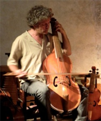
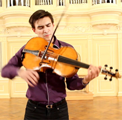
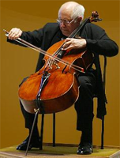

L'édition 2016 du Concours musical Reine Elisabeth de Belgique (Cmireb) s'est achevée sur la victoire incontestée du tchèque Lukas Vondracek (Son interprétation de la pièce imposée de Claude Ledoux, A Butterfly's Dream, fut tout simplement limpide). A presque 30 ans, cet habitué des concours a su tirer parti d'une expérience que ne possédaient pas ses rivaux, son talent a fait le reste. Ce succès est relativement tardif (il n'en sera peut-être que plus pérenne) : au "Van Cliburn 2009", Vondracek "n'a" décroché qu'un accessit et au "Tchaïkovsky 2011", il s'est retiré prématurément d'une compétition où allait émerger un certain Daniil Trifonov. Vainqueur du "Reine Elisabeth 2016", on suppose qu'il se retirera du "Tromsø 2017" auquel il envisageait de participer, qu'aurait-il à y gagner ?
Quant au Cmireb, il innove : une session consacrée au violoncelle verra le jour, en 2017, se répétant tous les quatre ans, en alternance avec le violon, le piano et le chant. La bonne nouvelle c'est que le jury sera tout beau tout neuf et que je serai mort avant qu'il ne soit en partie colonisé par d'anciens lauréats comme c'est devenu l'habitude pour les sessions de piano et de violon (Quatre cette année). Je suggère qu'on en profite pour lui expliquer comment déjouer les pièges d'un mode de scrutin très particulier, aux conséquences parfois fâcheuses.
Un point du règlement est en effet comptable des notes attribuées aux candidats (demi-)finalistes; il a toujours fait débat et n'a jamais été amélioré : les membres du jury rendent quotidiennement leurs appréciations chiffrées que rien ni personne ne peut effacer. Un programme d'arithmétique élémentaire calcule in fine le classement, sans intervention extérieure. A ma connaissance, il n'est pas prévu que ce programme élimine les notes extrêmes (inférieure et supérieure) attribuées à chacun. C'est dommage car il arrive plus souvent qu'on ne le pense (pas seulement à Bruxelles !) qu'un membre du jury manifeste un mouvement d'humeur excessif, faussant le principe d'une arithmétique souveraine et impartiale.
Cette année a vu l'éviction incompréhensible de la finale de Leonardo Pierdomenico que, j'ose l'espérer, le jury ne voulait majoritairement pas. Je fais d'autant plus volontiers la publicité de cet artiste sympathique qu'il serait regrettable que, découragé, il aille se jeter dans le Pô, pire encore qu'il abandonne le piano.

Viola da gamba

Violoncello da spalla

Violoncelle moderne
Venons-en à la session prochaine, de violoncelle, dont le règlement est d'ores et déjà accessible aux candidats potentiels. Bien que l'intention des organisateurs vise clairement l'instrument moderne, celui en vogue dès le 19ème siècle, il n'exclut pas formellement que les candidats jouent des pièces manifestement écrites pour un instrument antérieur, avec les adaptations qui s'imposent. D'ailleurs les Suites de Bach (dont aucune partition autographe ne nous est parvenue) seront au programme de chacun et l'on sait toutes les incertitudes qui planent encore aujourd'hui sur la nature de l'instrument visé, plutôt le violoncello da spalla (d'épaule : Courante de la Suite n°6) que la viole de gambe (de jambe : Courante de la Suite n°6) qui, de fait, exige des adaptations. Ce que vous entendrez ressemblera forcément à ceci (violoncelle moderne : Courante de la Suite n°6). De même la Sonate de Schubert pour arpeggione, autre pièce imposée, sera nécessairement adaptée : l'arpeggione est en effet tombé en désuétude peu après son apparition, en 1823, et seuls quelques musiciens, tel Nicolas Deletaille, tentent d'en perpétuer la mémoire.
Comme d'habitude, le concours comportera trois phases :
Les éliminatoires sont l'étape fastidieuse à laquelle n'assistent que les mélomaniaques et les valeureux membres d'un jury préliminaire. Une sonate de Luigi Boccherini est imposée, à ce stade, à choisir parmi les ut mineur G2 (en 10:47), en si bémol majeur G8 (en 1:24:25), en fa majeur G9 (en 1:36:16), en sol majeur G15 (en 2:39:31) et en ut majeur G17 (en 2:58:46); ces minutages réfèrent à l'enregistrement intégral disponible chez Brillant.
On aurait pu autoriser celles de Benedetto Marcello, d'Antonio Vivaldi voire de Jakob Klein (1688-1748), un inconnu récemment redécouvert par l'excellente Kristin von der Goltz, mais ne chicanons pas ce choix restreint, justifié par l'obligation de prévoir les accompagnateurs assurant la basse continue. Le public motivé devra aussi endurer un nombre incalculable de fois le premier mouvement de la Sonate Arpeggione de Franz Schubert (Sans les reprises, précise malicieusement le règlement, encore heureux ! N'empêche, cette oeuvre n'est pas prévue pour résister à une telle usure) et celui de l'ennuyeuse Sonate, opus 28, d’Eugène Ysaye. Jamais le nom d'épreuve (éliminatoire) n'aura mieux porté son nom; heureusement que s'y ajouteront, au choix du jury, deux des Pièces, opus 102, de Robert Schumann, le Rondo, opus 94,
d'Antonin Dvorak ou - je suis moins enthousiaste - les Variations concertantes, opus 17, de Félix Mendelssohn.
J'avoue ne pas trop comprendre ce qu'Ysaye fait au programme. S'il fallait vraiment inclure un régional de l'étape, pourquoi n'avoir pas pensé à Adrien-François Servais (1807-1866) en qui Berlioz, toujours excessif, voyait le Paganini du violoncelle ? On n'écoute plus guère ses oeuvres, d'ailleurs je n'ai trouvé de témoignages qu'en provenance de Finlande, c'est tout dire (Souvenir de Spa, opus 2, O cara Memoria, opus 17, Concerto, opus 5, et Concerto, opus posthume). Quant à honorer d'autres violoncellistes célèbres (en leur temps), on aurait pu penser aux frères Duport, Jean-Pierre (1741-1818) (Sonate n°2, opus 2-2) et Jean-Louis (1749-1819) (Concerto n°6, en ré mineur) et encore plus sûrement à Auguste Franchomme (1808-1884), qui non content d'avoir inventé (et imposé) la pique de fixation du violoncelle, a écrit de fort belles mélodies pour son instrument favori (Fantaisie sur les Chants d'Adieu, opus 19). Et puis n'oublions pas que Jacques Offenbach (1819-1880) a pas mal écrit pour son instrument de prédilection dont cette élégie Les Larmes de Jacqueline qui résonne ici avec une intensité prenante sous l'archet de cette autre Jacqueline, du Pré.
Les demi-finales sont particulièrement intéressantes : à ce stade, les candidats insuffisamment préparés ont été éliminés et le jury n'a pas encore eu le temps de sévir parmi ceux qui restent en lice, bref c'est le temps des découvertes. Elles comportent deux parties :
Dans la première, les candidats joueront un concerto (pré-)classique choisi parmi les suivants (cadences libres) :
Luigi Boccherini (si bémol majeur G.482) ou Joseph
Haydn (ut majeur Hob.VIIb:1
ou ré majeur Hob.VIIb:2).
Certes, on échappe à Mozart, qui n'a pas écrit de concerto pour violoncelle, mais on déplore l'absence de Leonardo Leo (1694-1744) et CPE Bach (1714-1788). On plaint le public des demi-finales qui va devoir écouter 8 fois en moyenne ces 3 oeuvres relativement mineures. Certes l'idée part du bon sentiment d'épargner l'Orchestre Royal de Chambre de Wallonie mais, précisément, est-ce vraiment l'épargner que lui imposer ce qui risque de devenir une rengaine ?
Outre un court imposé spécialement composé à leur intention (Pourquoi pas par Jean-Paul Dessy ?), ils joueront, au choix du jury, l'un des deux récitals d'une durée de 30 à 35 minutes qu'ils auront préparés, comprenant à tout le moins (au moins trois mouvements d')une des Suites de JS Bach (dont le Prélude). On peut discuter la place de Bach à ce stade de la compétition, plutôt qu'aux éliminatoires, mais on doit surtout regretter que le choix n'ait pas été élargi aux Suites de Max Reger, de Benjamin Britten ou d'Ernest Bloch, une belle occasion pourtant de sortir de la scolarité.
Le reste du récital étant laissé à la discrétion des candidats, on gage que quelques sonates feront leur apparition et les possibilités ne manqueront pas entre Beethoven et Brahms, où il sera difficile de (nous) faire oublier les tandems légendaires, Richter et Rostropovitch (Un concert live à Edinbourg, en 1964 !), pour le premier, et du Pré et Barenboim, pour le second. Felix Mendelssohn (Les deux Sonates, n°1, opus 45 & n°2, opus 58), Frédéric Chopin (Sonate, opus 65), Edward Grieg (Sonate en la mineur), Gabriel Fauré (Sonates opus 109 & opus 117) et peut-être surtout George Enescu (Les deux merveilleuses Sonates opus 26, n°1 en fa mineur & n°2 en do majeur) sont autant de bon choix. La Sonate de Guillaume Lekeu a peu de chance d'être retenue vu sa longueur (50 minutes !) mais Nikolaï Miaskovsky (Sonate n°2, opus 81), Alexander von Zemlinsky (Sonate en la mineur), Frank Bridge (Sonate, H 125), Zoltan Kodaly (Sonate, opus 4), Sergei Rachmaninov (Sonate, opus 19), Benjamin Britten (Sonate, opus 65), Dimitri Schostakovich (Sonate, opus 40) et Serge Prokofiev (Sonate, opus 119) sont autant d'alternatives excitantes. Même d'illustres inconnus ont écrit de belles oeuvres tels Camillo Schumann (1872-1946) (Aucun rapport avec l'illustre homonyme : Sonate, opus 59) ou la croate Dora Pejačević (1885-1923) (Sonate, opus 35).
Ceux qui voudront se passer des services d'un accompagnateur pourront se rabattre sur des pièces de qualité, pour violoncelle solo, les exemples ne manquent pas, des anciens 11 Caprices de Joseph-Marie-Clément dall'Abaco (1710-1805) aux récents 7 papillons de Kaija Saariaho (1952- ), en passant (par exemple !) par la Sonate de Rudolf Escher (1912-1980), celle, absolument incontournable, de György Ligeti (1923-2006) et pourquoi pas les études Choros Asikikos de Mikis Theodorakis (1925- ).
Lors de leur prestation en finale, les heureux lauréats interpréteront une oeuvre concertante inédite plus le concerto de leur choix (Il n'est pas clair que sont autorisées les oeuvres concertantes, telles les Variations sur un Thème Rococo de Tchaïkovsky). Personnellement j'aurais explicitement interdit le beau Concerto de Dvorak pour une raison fort simple : je suis convaincu - mais j'espère me tromper - qu'une majorité de finalistes opteront pour lui, quelques autres peut-être pour Elgar, on peut rêver. Les choix ne manquent pourtant pas même en-dehors des romantiques classiques, Robert Schumann (1810-1856), Edouard Lalo (1823-1892) et Camille Saint-Saëns (1835-1921), et ceux qui le furent moins, tels Joseph Joachim Raff (1822-1882) ou Karl Davydov (1838-1889). Relisez une chronique antérieure consacrée aux concertos pour violoncelles et réécoutez en priorité ceux mis en évidence :
Cette liste est fort peu complète mais elle l'est déjà bien assez car, ne nous faisons aucune illusion, le choix des candidats sera orienté par des professeurs qui ont une idée préconçue du compositeur qui porte chance lors d'un concours, tels Sibelius au violon et Rachmaninov au piano.
Quoi qu'il en sera, l'initiative du Cmireb est assurée de rencontrer un franc succès auprès d'un public qui aime la sonorité ample et chaude du violoncelle. Les commentateurs sourcilleux s'interrogent cependant dès à présent : les jeunes violoncellistes ne courant pas les rues, va-t-on vraiment pouvoir maintenir ce point du règlement que 12 lauréats doivent être distingués, je précise sans menacer le niveau que le Concours de Bruxelles a toujours revendiqué ?
Note ajoutée au terme de l'épreuve : il est apparu que la crainte de ne pouvoir rassembler douze finalistes de haut niveau n'était pas fondée. Par contre, celle relative au choix du concerto libre l'était : les membres du jury mais aussi le public ont eu droit au Concerto de Dvorak jusqu'à saturation. Les organisateurs ont quatre ans devant eux pour trouver une parade.